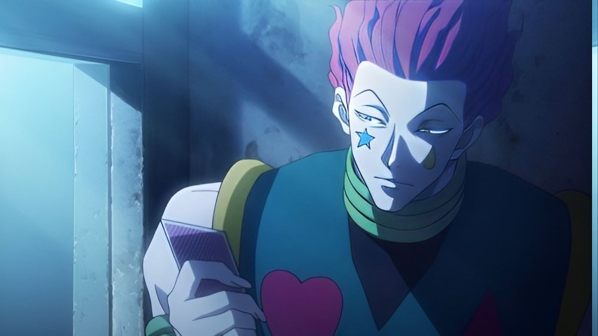

Welcome to the Hisoka Website
Hisoka Morow.

Hisoka Morow.
is a Hunter and former member #4 of the Phantom Troupe; his physical strength ranked third in the group. He is always in search for strong opponents, and would spare those who have great potential, such as Gon and Killua in order for them to get strong enough to actually challenge him. He originally served as the primary antagonist of the Hunter Exam arc and the Heavens Arena arc, before becoming a supporting character during the Yorknew City arc and Greed Island arc. During the 13th Hunter Chairman Election arc, he reprises his role as a secondary antagonist.